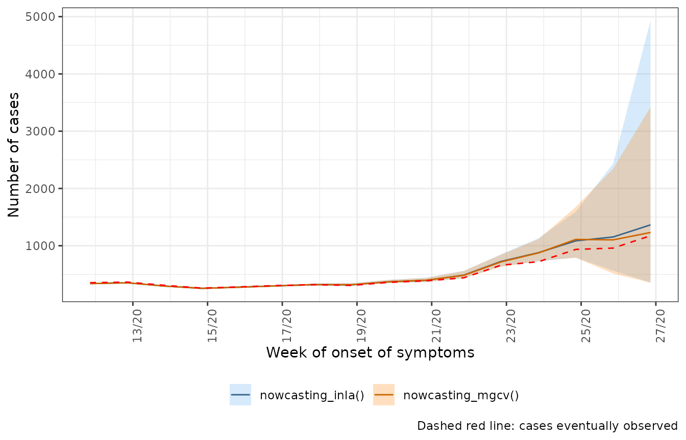

nowcasting_inla() or nowcasting_mgcv()
Rafael Lopes & Leonardo Bastos
Source:vignettes/articles/5_inla_vs_mgcv.Rmd
5_inla_vs_mgcv.RmdTwo functions, one model
nowcaster has two workhorse functions that fit the same
model: a negative binomial model for the delay triangle, with a smooth
effect for the week of onset and another for the reporting delay.
-
nowcasting_inla()fits it in a fully Bayesian way withINLA, with random walk priors for the time and delay effects. -
nowcasting_mgcv()fits it as a generalised additive model withmgcv, with penalised splines for the time and delay effects.
Both take the same main arguments and return the same output, so switching from one to the other is a matter of changing the function name. In this article each example is shown for both functions: use the tabs above each code block to switch between them. Choosing a tab switches all the examples on the page.
nowcasting_inla() |
nowcasting_mgcv() |
|
|---|---|---|
| Fitting engine |
INLA (not on CRAN) |
mgcv (on CRAN, installed with
nowcaster) |
| Time and delay effects | random walks (rw2, rw1) |
penalised thin plate splines |
| Uncertainty | posterior samples of the latent field and hyperparameters | samples of the coefficients, dispersion fixed at its estimate |
| Extra options |
zero_inflated, timeREmodel,
INLAoutput, WAIC, DIC
|
method.group.gam |
Data
library(nowcaster)
library(dplyr)
library(ggplot2)
data(sragBH)
# A helper to plot an estimate together with the curve observed at the time
plot_nowcast <- function(estimate, observed) {
ggplot(estimate, aes(x = dt_event)) +
geom_ribbon(aes(ymin = LI, ymax = LS), fill = "grey70", alpha = 0.5) +
geom_line(aes(y = Median, colour = "Nowcasting")) +
geom_line(data = observed, aes(y = observed, colour = "Observed")) +
scale_colour_manual(values = c(Nowcasting = "black", Observed = "grey50"),
name = "") +
scale_x_date(date_breaks = "2 weeks", date_labels = "%V/%y") +
labs(x = "Week of onset of symptoms", y = "Number of cases") +
theme_bw() +
theme(legend.position = "bottom", axis.text.x = element_text(angle = 90))
}Nowcasting
Fit
now_inla <- nowcasting_inla(dataset = sragBH,
date_onset = DT_SIN_PRI,
date_report = DT_DIGITA,
data.by.week = TRUE)
head(now_inla$total)#> # A tibble: 6 × 7
#> Time dt_event Median LI LS LIb LSb
#> <int> <date> <dbl> <dbl> <dbl> <dbl> <dbl>
#> 1 17 2021-12-19 625 621 633 623 627
#> 2 18 2021-12-26 695 687 708 692 698
#> 3 19 2022-01-02 812 800 829 807 817
#> 4 20 2022-01-09 887 871 908 881 893
#> 5 21 2022-01-16 818 799 846. 811 826
#> 6 22 2022-01-23 629 610 660 621 639
now_mgcv <- nowcasting_mgcv(dataset = sragBH,
date_onset = DT_SIN_PRI,
date_report = DT_DIGITA,
data.by.week = TRUE)
head(now_mgcv$total)#> # A tibble: 6 × 7
#> Time dt_event Median LI LS LIb LSb
#> <int> <date> <dbl> <dbl> <dbl> <dbl> <dbl>
#> 1 17 2021-12-19 625 621 633 623 627
#> 2 18 2021-12-26 695 687 707 692 698
#> 3 19 2022-01-02 812 800 830 807 817
#> 4 20 2022-01-09 887 871 910 881 894
#> 5 21 2022-01-16 817 800 845 811 826
#> 6 22 2022-01-23 631 609 659 623 640Nowcasting by age
With age_col both functions fit the structured model,
with time and delay effects for each age class.
nowcasting_inla() uses an independent effect per age class
for the random walks; nowcasting_mgcv() uses a factor
smooth (method.group.gam = "fs", the default) or one smooth
per age class (method.group.gam = "by").
Fit
now_age_inla <- nowcasting_inla(dataset = sragBH,
date_onset = DT_SIN_PRI,
date_report = DT_DIGITA,
age_col = Idade,
bins_age = "10 years")
head(now_age_inla$age)#> # A tibble: 6 × 9
#> Time dt_event fx_etaria fx_etaria.num Median LI LS LIb LSb
#> <int> <date> <fct> <dbl> <dbl> <dbl> <dbl> <dbl> <dbl>
#> 1 17 2021-12-19 1 1 123 122 126 122 123
#> 2 17 2021-12-19 2 2 15 15 16 15 15
#> 3 17 2021-12-19 3 3 20 20 22 20 20
#> 4 17 2021-12-19 4 4 30 30 31 30 30
#> 5 17 2021-12-19 5 5 29 29 31 29 30
#> 6 17 2021-12-19 6 6 68 68 70 68 69
now_age_mgcv <- nowcasting_mgcv(dataset = sragBH,
date_onset = DT_SIN_PRI,
date_report = DT_DIGITA,
age_col = Idade,
bins_age = "10 years")
head(now_age_mgcv$age)#> # A tibble: 6 × 9
#> Time dt_event fx_etaria fx_etaria.num Median LI LS LIb LSb
#> <int> <date> <fct> <dbl> <dbl> <dbl> <dbl> <dbl> <dbl>
#> 1 17 2021-12-19 1 1 123 122 126 122 124
#> 2 17 2021-12-19 2 2 15 15 17 15 15
#> 3 17 2021-12-19 3 3 20 20 22 20 20
#> 4 17 2021-12-19 4 4 30 30 31 30 30
#> 5 17 2021-12-19 5 5 29 29 31 29 30
#> 6 17 2021-12-19 6 6 68 68 70 68 69Forecasting
With K > 0 both functions also forecast the weeks
after the last onset week. Here we cut the data on 4 July 2020 and
forecast one week ahead.
Fit
fc_inla <- nowcasting_inla(dataset = srag_2020,
date_onset = DT_SIN_PRI,
date_report = DT_DIGITA,
K = 1)
tail(fc_inla$total, 3)#> # A tibble: 3 × 7
#> Time dt_event Median LI LS LIb LSb
#> <int> <date> <dbl> <dbl> <dbl> <dbl> <dbl>
#> 1 25 2020-06-14 1086. 793 1595. 964. 1252.
#> 2 26 2020-06-21 1153 564. 2435. 905 1484.
#> 3 27 2020-06-28 1364. 358. 4927. 894. 2140.
fc_mgcv <- nowcasting_mgcv(dataset = srag_2020,
date_onset = DT_SIN_PRI,
date_report = DT_DIGITA,
K = 1)
tail(fc_mgcv$total, 3)#> # A tibble: 3 × 7
#> Time dt_event Median LI LS LIb LSb
#> <int> <date> <dbl> <dbl> <dbl> <dbl> <dbl>
#> 1 25 2020-06-14 1110. 790 1677 982. 1262
#> 2 26 2020-06-21 1102. 515. 2345. 852. 1408.
#> 3 27 2020-06-28 1232. 355. 3421. 825. 1774.Comparing the estimates
Putting both estimates on the same plot, together with the curve that was eventually observed, shows how close they are.
eventually_observed <- sragBH |>
mutate(dt_event = DT_SIN_PRI - as.numeric(format(DT_SIN_PRI, "%w"))) |>
count(dt_event, name = "observed")
both <- bind_rows(
fc_inla$total |> mutate(model = "nowcasting_inla()"),
fc_mgcv$total |> mutate(model = "nowcasting_mgcv()")
)
ggplot(both, aes(x = dt_event)) +
geom_ribbon(aes(ymin = LI, ymax = LS, fill = model), alpha = 0.25) +
geom_line(aes(y = Median, colour = model)) +
geom_line(data = eventually_observed |>
filter(dt_event >= min(both$dt_event),
dt_event <= max(both$dt_event)),
aes(y = observed), colour = "red", linetype = "dashed") +
scale_colour_manual(values = c("steelblue4", "darkorange3"), name = "") +
scale_fill_manual(values = c("steelblue2", "darkorange1"), name = "") +
scale_x_date(date_breaks = "2 weeks", date_labels = "%V/%y") +
labs(x = "Week of onset of symptoms", y = "Number of cases",
caption = "Dashed red line: cases eventually observed") +
theme_bw() +
theme(legend.position = "bottom", axis.text.x = element_text(angle = 90))
The width of the 95% intervals in the most recent weeks:
both |>
group_by(model) |>
slice_tail(n = 4) |>
mutate(width_95 = LS - LI) |>
select(model, dt_event, Median, LI, LS, width_95)#> # A tibble: 8 × 6
#> # Groups: model [2]
#> model dt_event Median LI LS width_95
#> <chr> <date> <dbl> <dbl> <dbl> <dbl>
#> 1 nowcasting_inla() 2020-06-07 879 724. 1130. 406.
#> 2 nowcasting_inla() 2020-06-14 1086. 793 1595. 802.
#> 3 nowcasting_inla() 2020-06-21 1153 564. 2435. 1871.
#> 4 nowcasting_inla() 2020-06-28 1364. 358. 4927. 4569.
#> 5 nowcasting_mgcv() 2020-06-07 875 737. 1115. 378.
#> 6 nowcasting_mgcv() 2020-06-14 1110. 790 1677 887
#> 7 nowcasting_mgcv() 2020-06-21 1102. 515. 2345. 1830.
#> 8 nowcasting_mgcv() 2020-06-28 1232. 355. 3421. 3066.Which one to use
-
nowcasting_mgcv()needs only CRAN packages. It is a good default whenINLAis not available or for routine use. -
nowcasting_inla()is the fully Bayesian version of the model. It propagates the uncertainty of all parameters, including the dispersion, and offers the options of the original model (zero-inflation, other latent models for time, model comparison with WAIC and DIC).
The two functions share the data preparation and the summary of the trajectories, so differences between their estimates come from the model fit only.